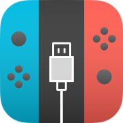

NXBoot enables running custom boot code on Tegra X1 devices such as the Nintendo Switch.
Batteries are not included: This application does not contain any payloads, so you will have to download and import some first.
It is recommended that you become familiar with the Nintendo Switch homebrew community prior to using this application. Early boot code has full access to the device it runs on and can damage it. Nintendo is known to ban modified devices from online services if such modification is detected.
THE SOFTWARE IS PROVIDED "AS IS", WITHOUT WARRANTY OF ANY KIND, EXPRESS OR IMPLIED, INCLUDING BUT NOT LIMITED TO THE WARRANTIES OF MERCHANTABILITY, FITNESS FOR A PARTICULAR PURPOSE AND NONINFRINGEMENT. IN NO EVENT SHALL THE AUTHORS OR COPYRIGHT HOLDERS BE LIABLE FOR ANY CLAIM, DAMAGES OR OTHER LIABILITY, WHETHER IN AN ACTION OF CONTRACT, TORT OR OTHERWISE, ARISING FROM, OUT OF OR IN CONNECTION WITH THE SOFTWARE OR THE USE OR OTHER DEALINGS IN THE SOFTWARE.
An OTG adapter is required for connecting your iOS device to the Nintendo Switch. The following configuration is known work:
A direct Lightning to USB 3 Type C cable (without OTG adapter in between) does not work. Third-party OTG adapters may work, but your mileage may vary.
There are multiple methods for importing payloads:
Create Boot Profiles by tapping the Edit button and selecting Add Payload.
A warning about an unsupported accessory appears and can be ignored.
Always power on the Nintendo Switch prior to connecting it. Otherwise iOS will disconnect the device for consuming too much power.